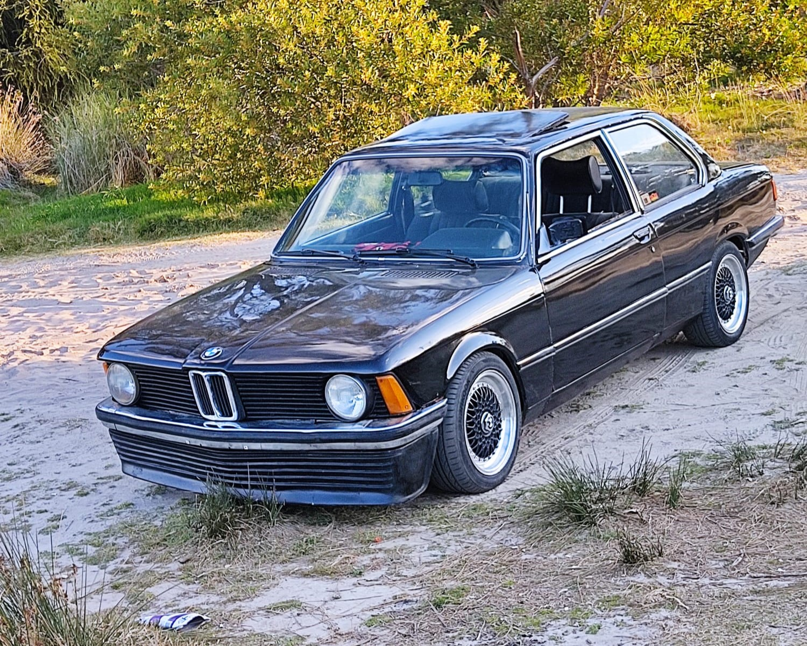

Este Ford falcon sprint 1979, fue el primer proyecto realizado por el taller, se compro en el año 2016 practicamente desarmado, con el pasar de los años se fue realizando la restauracion tanto de la parte mecanica como de la estetica y la electrica. El auto cuenta con el motor 221sp de 3.6lts de cilindrada con unos 245hp logrados por la preparacion del mismo en manos de nuestros mecanicos.


Este BMW 316 e21 de 1981 fue comprado en 2018, cuenta con un motor M10 de 1.6lts, se le realizo un trabajo de restauracion estructural ya que contaba con gran parte del suelo oxidado y corria riesgo de quebrarse, tambien se le coloco un suspension a medida a gusto del dueño.

Este Alfa romeo 164 de 1991 fue adquirido en 2020, cuenta con el legendario motor busso v6 de 3.0lts con 235hp. al mismo se le realizo un mantenimiento general, se le cambio la bomba de agua, correa de distribucion, filtros varios, pastillas de frenos y se le solucionaron varios problemas electricos. tambien cuenta con una suspension a medida hecha por nuestros mecanicos.